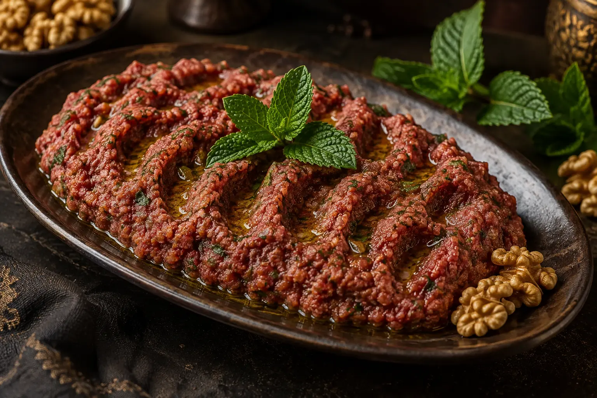

Homus sírio tradicional
Cremoso, equilibrado e sem alho: a receita original preparada pelo Syriana.
Ver receita completaSabores, técnicas e histórias compartilhadas por quem nasceu dentro da cultura árabe.
Cremoso, equilibrado e sem alho: a receita original preparada pelo Syriana.
Ver receita completa
A técnica de bater a carne, preparar o trigo e temperar o verdadeiro quibe sírio.
Ver receita completaBaba ganoush, mjadra, baklava e outros sabores sírios.